Biomass aggregators for India's CBG industry
The feedstock layer for India's bio-energy transition.
We reclaim degraded farmland in Uttar Pradesh and aggregate the biomass behind compressed biogas: 20 to 25 tonnes of Napier every day, across seven districts.
Reclaimed land, Patiyali, Kasganj
See where we supply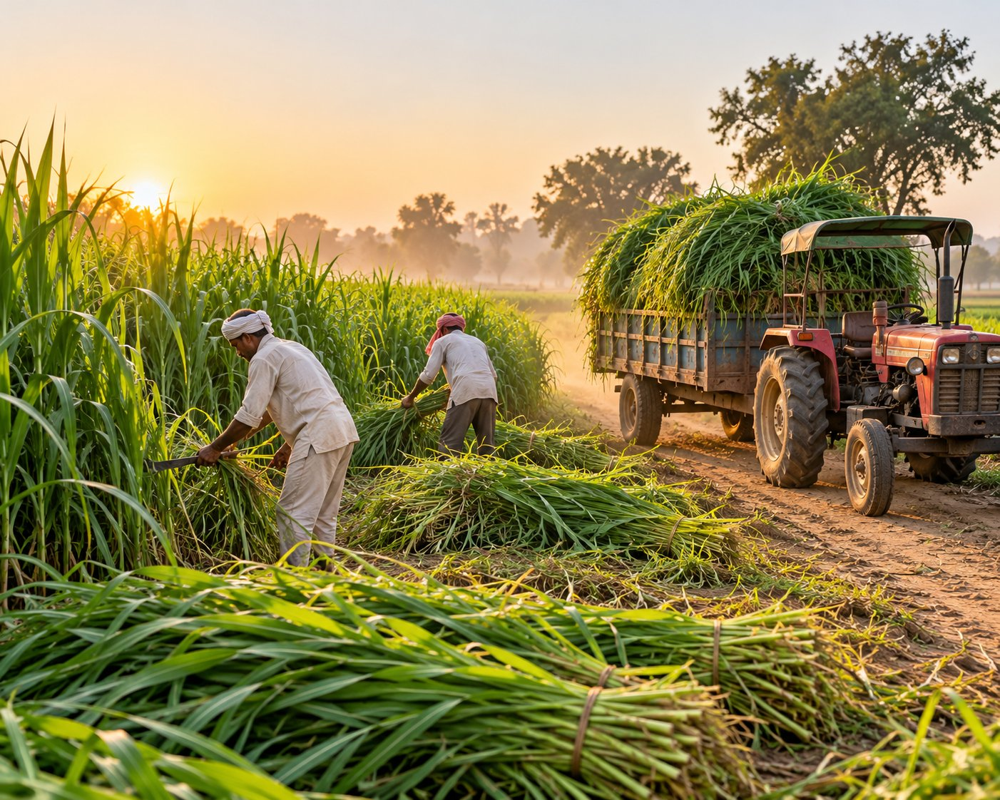
Est. 2024 · Patiyali, KasganjMost bio-energy projects discover their feedstock problem after the plant is built. GreenVolt solves it first, on land that was never feeding anyone.
Since 2025 we have been reclaiming alkaline, low-fertility land around Patiyali and replanting it with Super Napier, a high-yield perennial grown for biomass, not for the dinner plate. Every tonne adds to energy feedstock supply without pulling land out of food production.
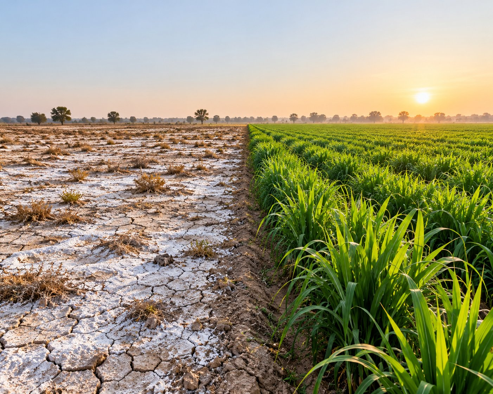
Degraded land to Super NapierWhat we build
We turn dead land into a fuel supply
Reclaim
Degraded, high-alkalinity land brought back into productive use.
Cultivate
Roughly 100 acres of Super Napier under continuous, multi-year cultivation.
Harvest & move
Mechanized cutting cycles and daily logistics, already running at 20–25 tonnes of Napier a day.
Convert
Feedstock routed into CBG, gasification and biochar pathways.
Biomass portfolio
Biomass aggregators, specialising in CBG feedstock
We are biomass aggregators and specialize in the biomass required for CBG. These are the feedstocks we source and supply.
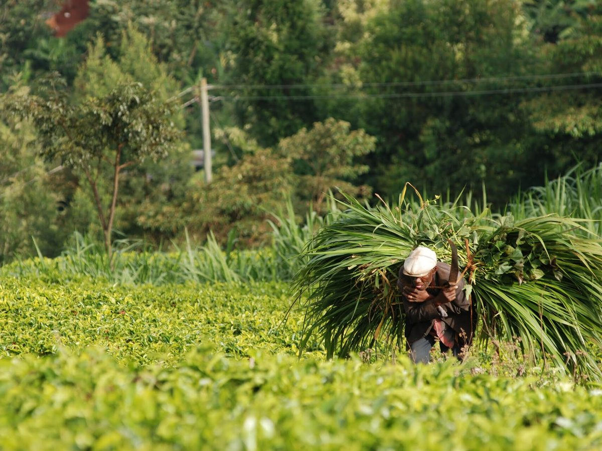
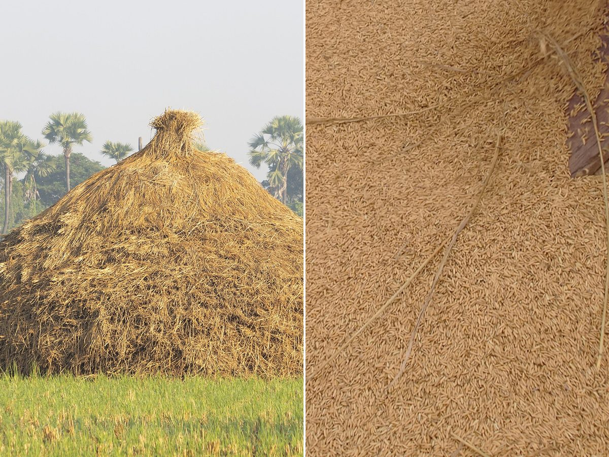
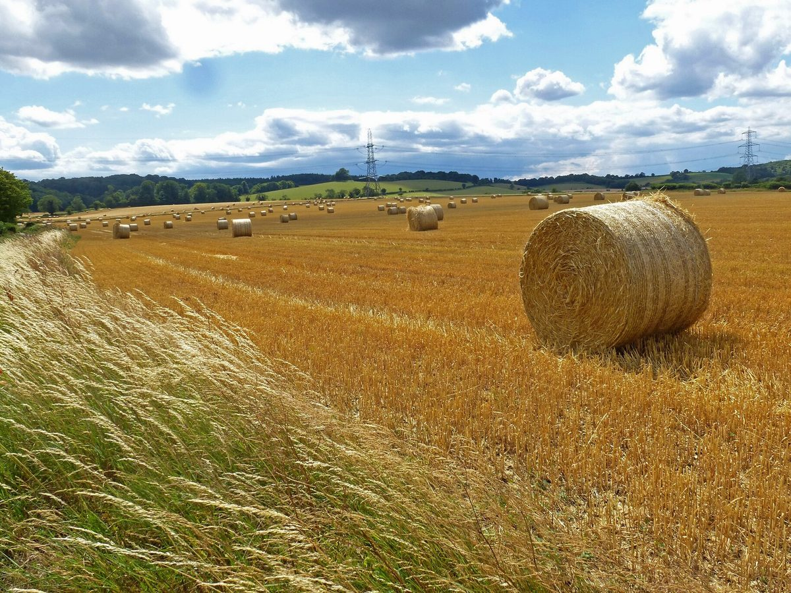
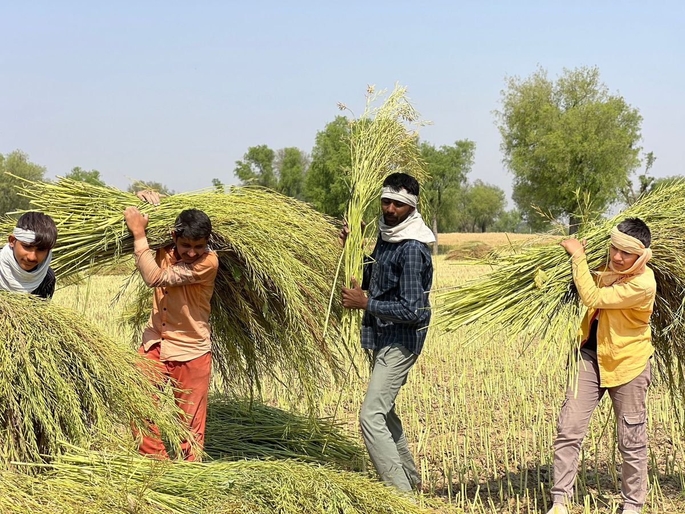
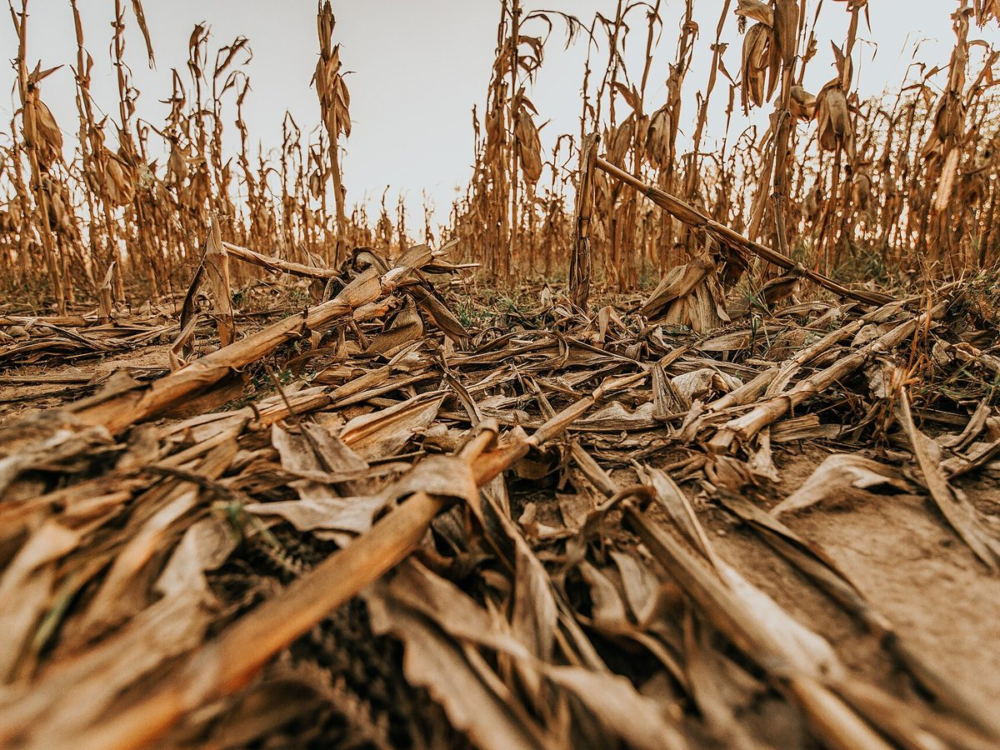
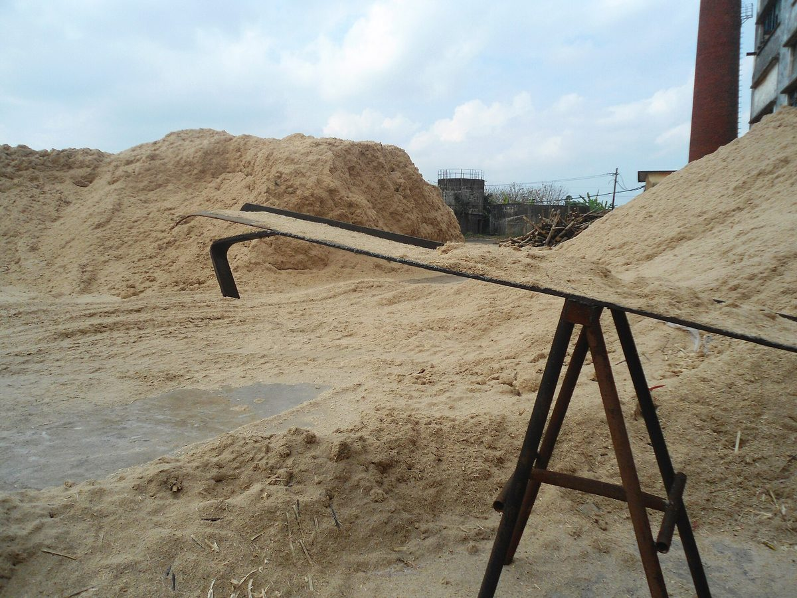
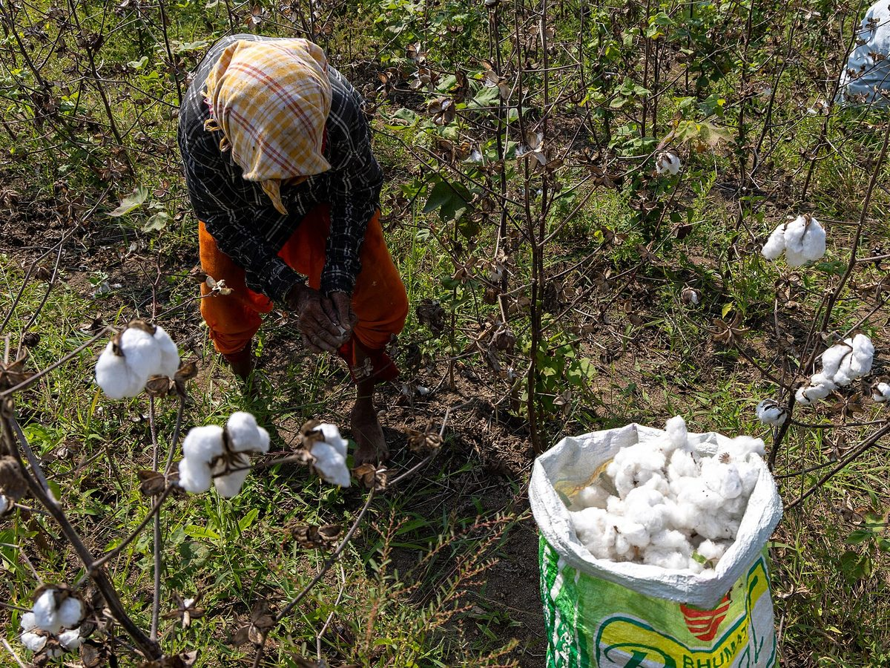
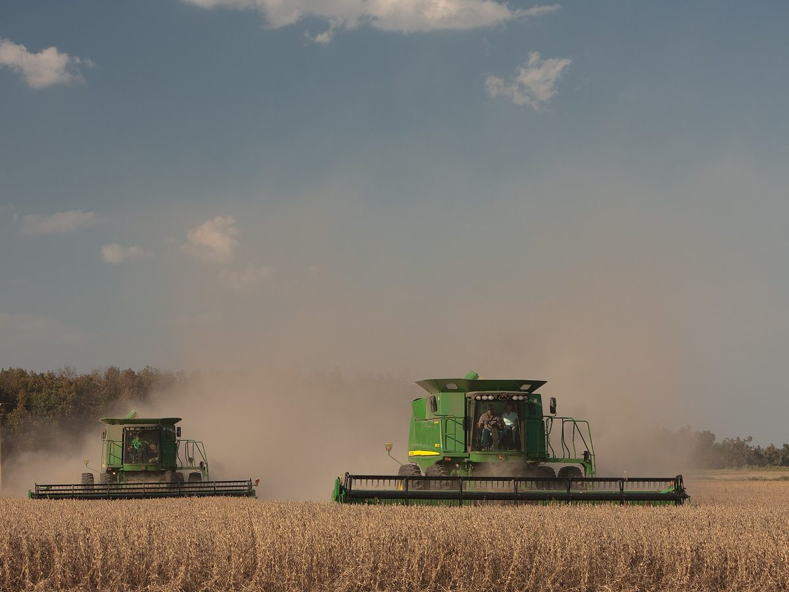
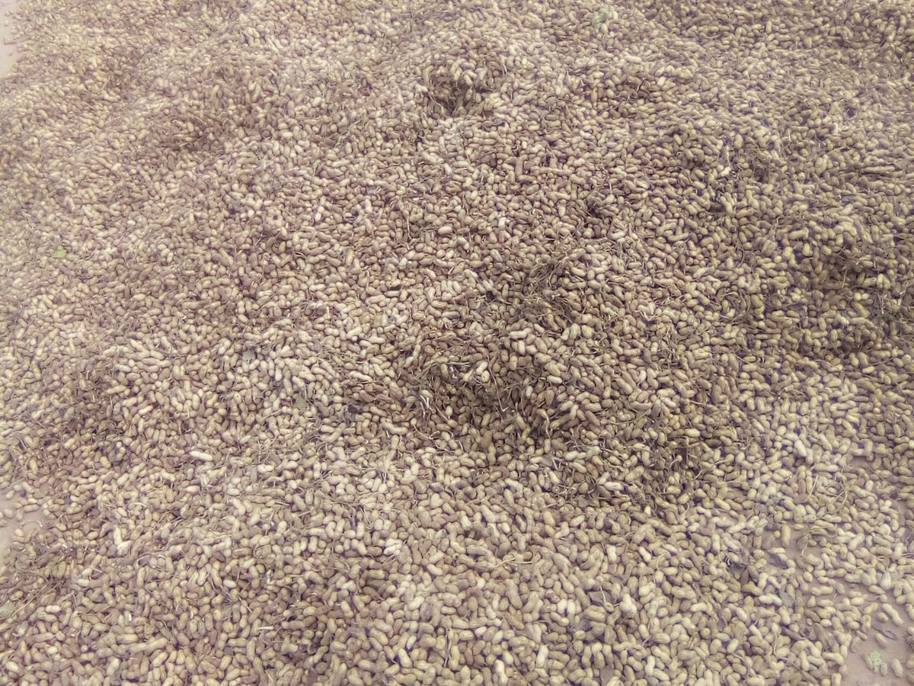
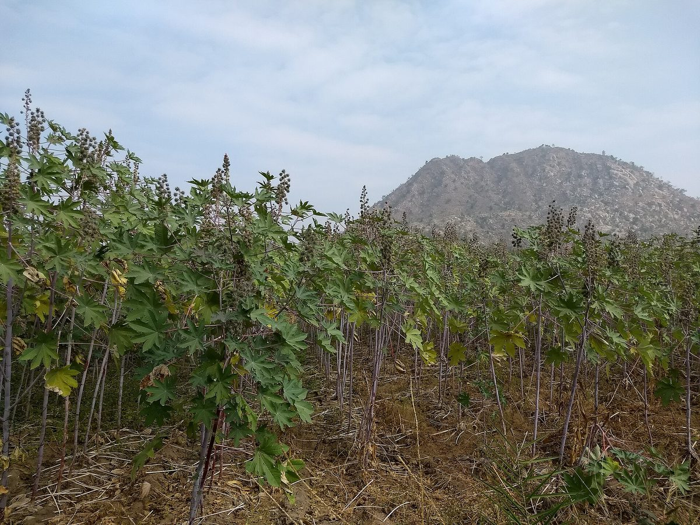
Select the biomass you need and send us your requirement online.
Service area
Daily supply across seven districts
Now supplying across 7 districts
From our base in Kasganj, GreenVolt Dynamics delivers 20 to 25 tonnes of Napier per day across seven districts of western Uttar Pradesh.
- Kasganj
- Etah
- Budaun
- Farrukhabad
- Hathras
- Aligarh
- Agra
The feedstock engine
One crop. Five energy pathways.
Super Napier is the input. This is where the harvest goes.
Compressed Biogas (CBG) production
Multi-year supply frameworks built around the high-methane yield of dedicated Super Napier acreage, sized for commercial-scale CBG facilities.
Primary pathwayBiomass aggregation
Centralized collection and grading from our own plantations and partner land, structured for long-term off-take.
Biomass gasification
Feedstock supply lines for gasification projects that convert biomass into syngas and power.
Biochar & carbon-negative tech
Pathways for converting surplus biomass into biochar, putting carbon back into the soil it came from.
Rural capacity building
Technical training in modern agronomy and bio-energy operations for farmers and rural youth.
The crop behind the model
Why Super Napier, specifically
Most biomass feedstocks are someone else's leftover: crop residue tied to a single harvest window, or waste with an unpredictable mix. Super Napier is grown on purpose, for this purpose.
It's a perennial. Once established, it regrows after every cut for several years without replanting, and its lignocellulosic composition breaks down efficiently in anaerobic digestion.
Perennial, not seasonal
Regrows after each cut for several years.
Continuous cutting cycles
New growth ready roughly every 50–75 days.
Built for marginal land
Low fertilizer and water needs suit degraded soils.
Digester-ready
High cellulose content for CBG and gasification.
Vision & Initiatives
Beyond feedstock: where GreenVolt is headed
Leadership
Two founders, one supply chain
GVD pairs energy-sector fluency with on-the-ground execution.

Over five years inside India's biofuels and green energy sector, spent finding commercially viable paths toward sustainable fuels within the wider renewable energy ecosystem. Vaibhav sets GVD's read on where bio-energy demand is heading, and how feedstock supply needs to be built to meet it.

An entrepreneurial background in digital media, now applied to asset-heavy, climate-resilient value chains on the ground in Kasganj. Akshat works from one conviction: aggressive commercial scaling and real ecological stewardship aren't in tension. Done properly, they're the same job.
Built to last
Growth that doesn't cost the land
Reclaimed land only
We work exclusively on degraded, non-arable land, avoiding any food-versus-fuel conflict by design.
Carbon-negative pathways
Biochar routes convert surplus biomass into a soil amendment that locks carbon back into the ground.
Carbon drawdown while growing
Super Napier pulls additional carbon out of the atmosphere as it grows, before any of it reaches a digester.
Rural livelihoods
Technical training and steady, multi-year off-take agreements bring durable income to farmers and rural youth.
Let's talk feedstock
Need Napier or any CBG-grade biomass? Place an order online, or reach the GVD team directly.